★★★★★
Вожу подстригаться сына, ездим с другого берега раз в полтора месяца — стабильно. Даже не жалко времени на дорогу: это лучшая парикмахерская, что мы встречали. У мастера Натальи — золотые руки.
Детская студия красоты на Южном берегу Красноярска: стрижки без слёз, бережный прокол ушек и первая стрижка, которую хочется сохранить на память.
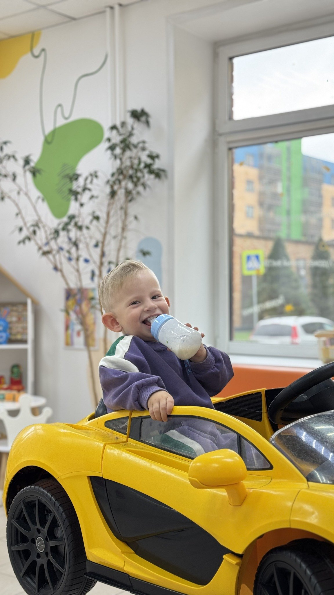
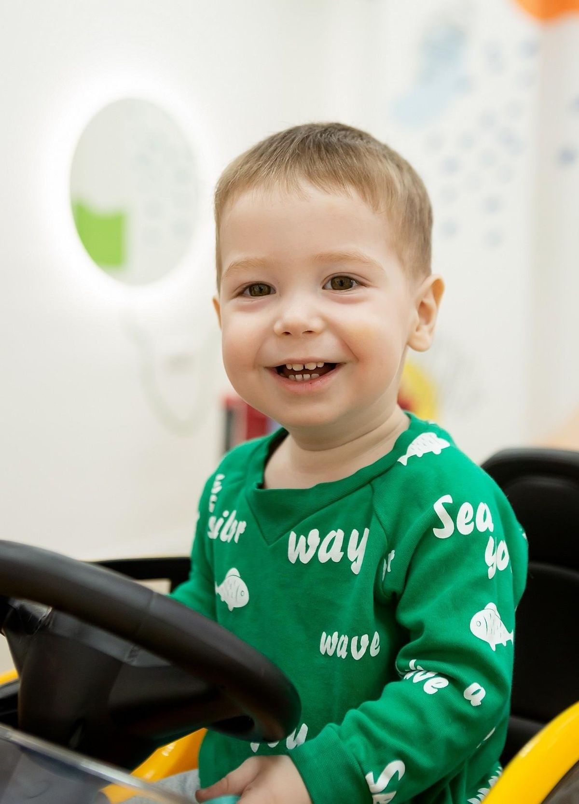
У каждого направления свой цвет — как на стенах студии. Выберите, с чего начнём.
Первая, модельная, на машинке, без машинки и «на ручках». Художественный выстриг — от молнии до лабиринта.
от 750 ₽Стерильная System-75 от Studex (США), одноразовые материалы, памятка по уходу. Детям и взрослым.
от 2 500 ₽Пока ребёнок играет, стрижём вас. Мужская стрижка, женская, чёлка и кончики — без отдельной поездки в салон.
от 450 ₽Локоны, косички, цветные пряди и экспресс-окрашивание до первого мытья — к утреннику, выпускному, дню рождения.
от 400 ₽Не процедура, а первый шаг в большой мир. Вот как он проходит у нас — без спешки и с остановками.
Мастер говорит с малышом, показывает расчёску и машинку — пусть сначала потрогает.
Жёлтый спорткар, красный, белый или оранжевый мотоцикл — ребёнок садится сам.
Любимый — на экране перед креслом. А в углу чирикают два попугайчика.
Быстро и аккуратно, пока малыш занят. Можно у мамы на ручках.
Фото до стрижки, первый локон в конвертике и диплом о первой стрижке.
Капсула с игрушкой из автомата — за смелость. Каждому ребёнку.

Нажмите — и узнайте, что ещё уносят домой наши гости.
Сюрпризы у нас только в капсулах. Итоговую стоимость кончиков и причёсок мастер назовёт до начала работы.
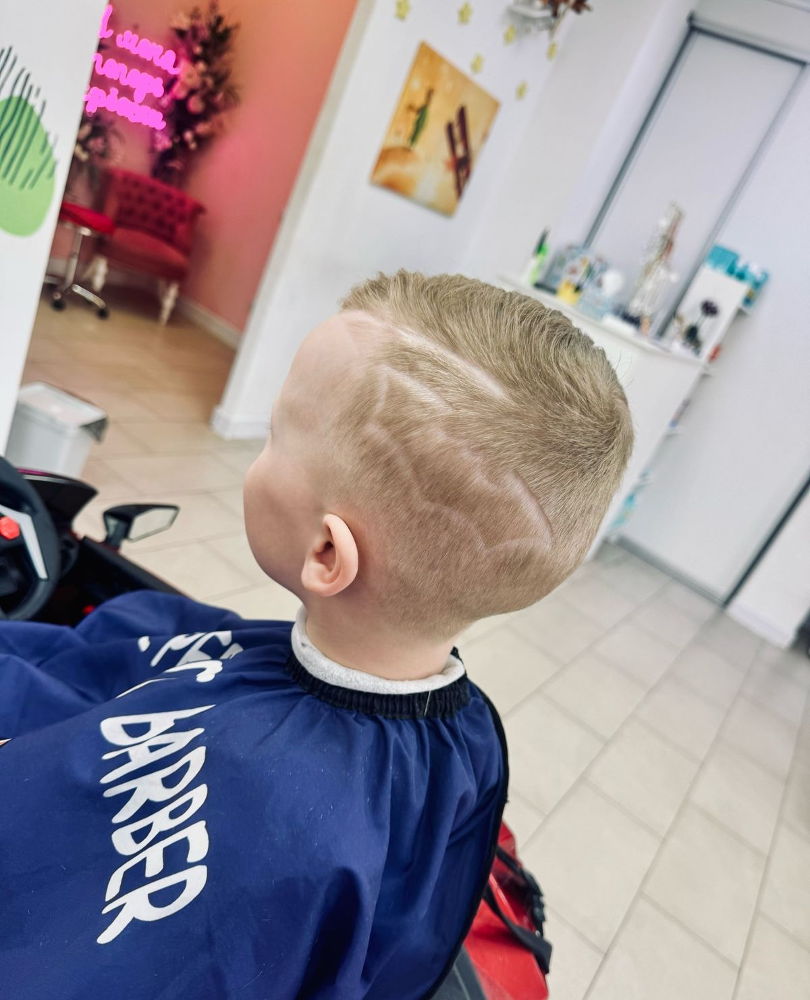
Онлайн-запись — не позднее чем за 12 часов. Срочно? Звоните: +7 913 030-12-02

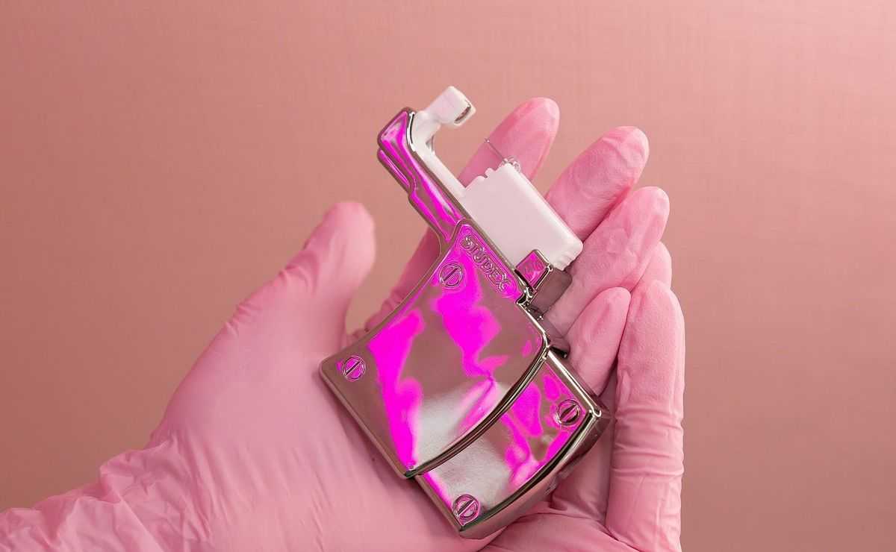
Для прокола у нас отдельная розовая комната с цветами и неоном — малышка запомнит не укол, а праздник. А мама — что всё было стерильно.
Гвоздики, звёздочки, сердечки, цветочки, камушки — выбор первых серёжек стал ещё больше.
Красная дверь на Капитанской, 14 — а за ней светло, просторно и интересно. Листайте →

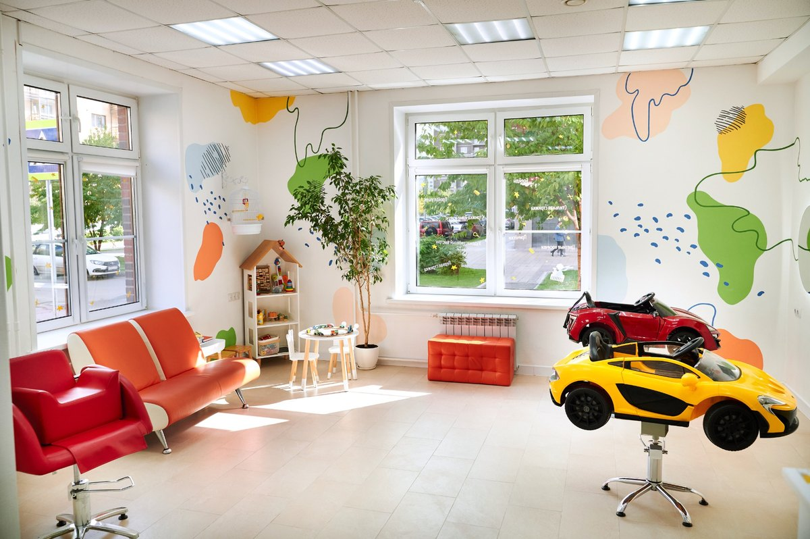

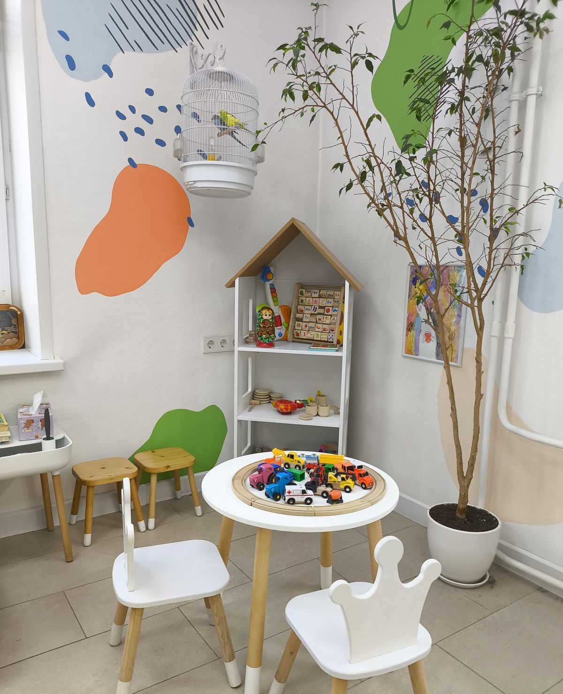
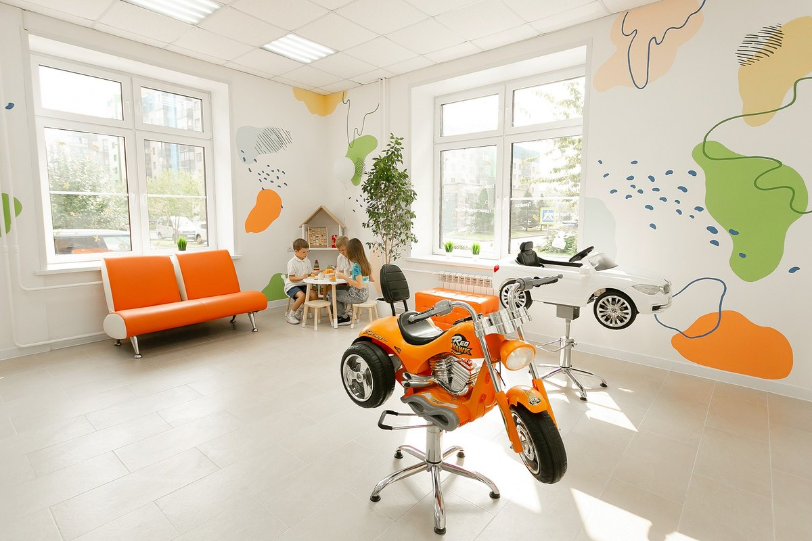
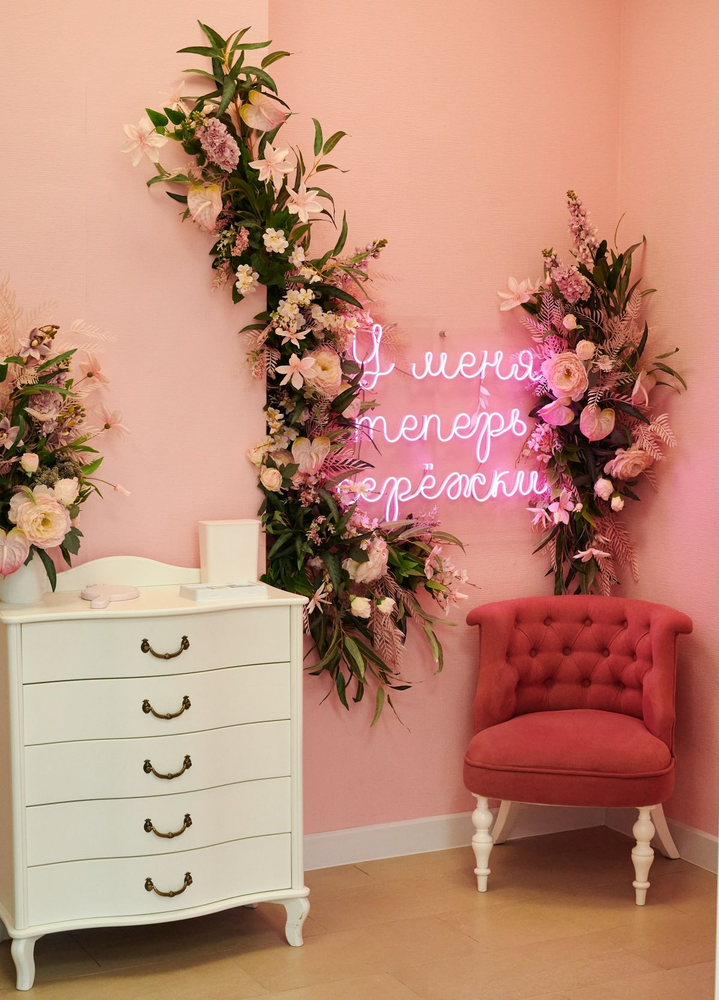
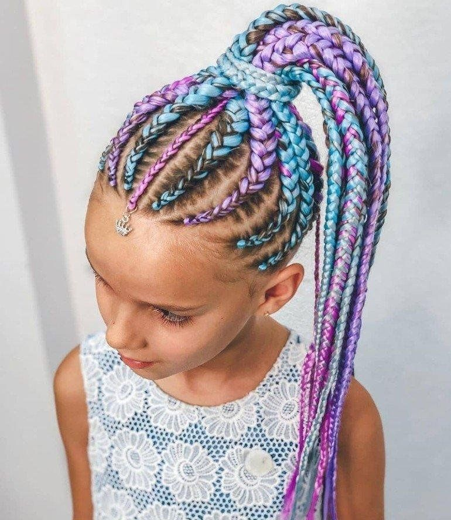
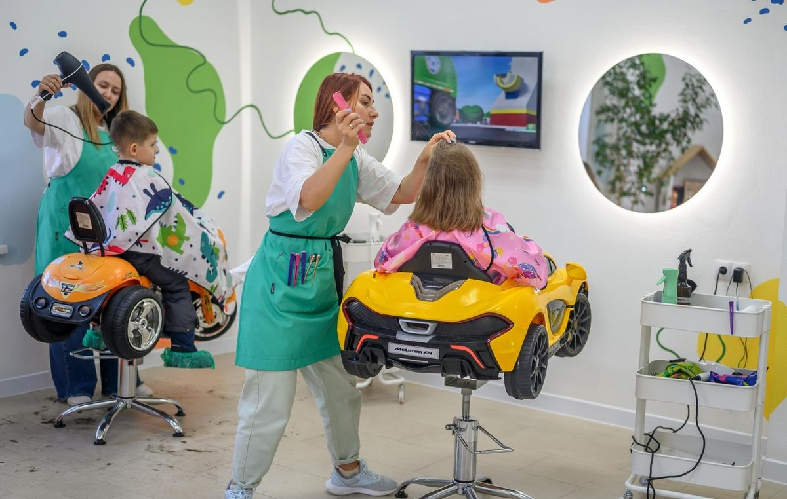
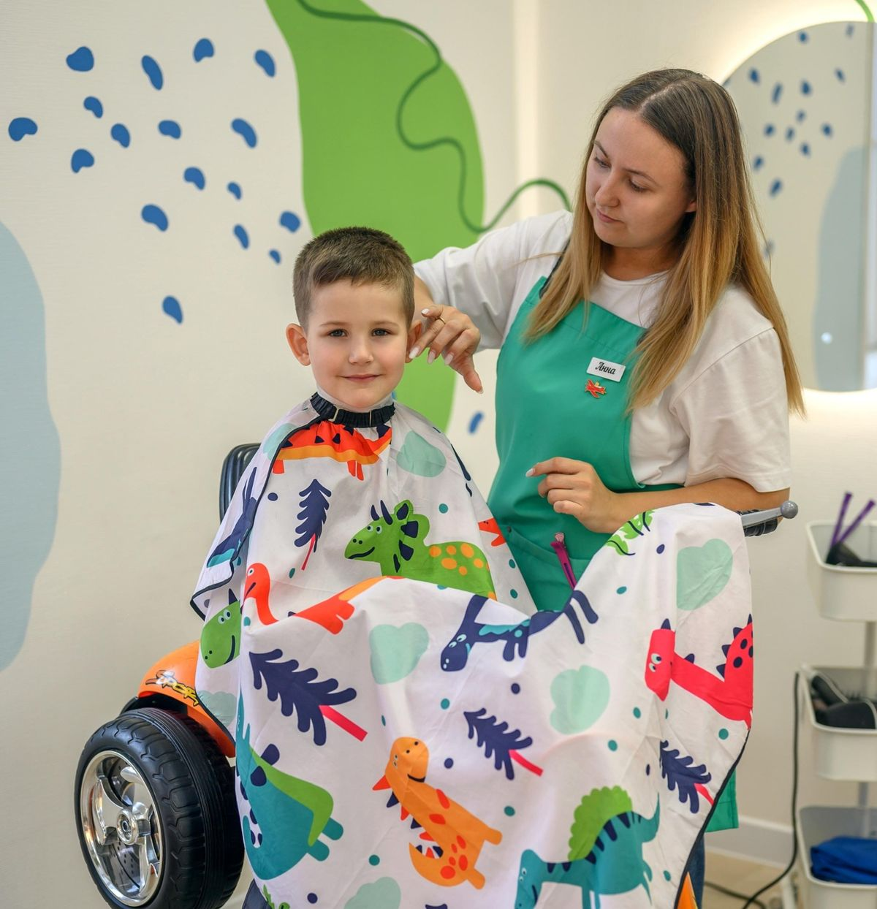
Наши мастера знакомятся с малышами, дают им время привыкнуть и помогают почувствовать себя спокойно. Нажмите на карточку, чтобы познакомиться поближе.
Это не наши слова — это отзывы из 2ГИС. Немного из последних:
Ваши впечатления помогают другим родителям выбрать нас 💛
Не нашли ответ — напишите нам или позвоните, расскажем всё до визита.
Стрижём самых маленьких — у нас делали первую стрижку малышам в 10–11 месяцев. Мастер сначала знакомится и даёт привыкнуть, а если страшно — стрижём у мамы на ручках.
Это нормально, мы к этому готовы. Кресла-машинки, мультики, игрушки, попугайчики и администратор, который умеет отвлечь. Не торопимся: лучше пять минут поиграть, чем стричь сквозь слёзы.
В будний день. В будни в студии работает один специалист — тихо, без очереди и большого количества детей, всё внимание вашему малышу.
Сама стрижка, фото до, первый локон в конвертике на память, именной диплом о первой стрижке и подарок из автомата. Стоимость — 1 200 ₽.
Стерильной системой System-75 Studex (США): серёжка уже в стерильном одноразовом картридже. Мастер отвечает на вопросы, ставит точки, прокалывает быстро и подробно объясняет уход. Прокалываем детям и взрослым.
Онлайн через YCLIENTS — не позднее чем за 12 часов до визита. Если нужно срочно — позвоните: +7 (391) 280-12-02 или +7 913 030-12-02.